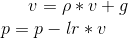
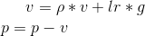
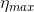
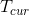
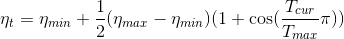

torch.optim
torch.optim is a package implementing various optimization algorithms. Most commonly used methods are already supported, and the interface is general enough, so that more sophisticated ones can be also easily integrated in the future.
How to use an optimizer
To use torch.optim you have to construct an optimizer object, that will hold the current state and will update the parameters based on the computed gradients.
Constructing it
To construct an Optimizer you have to give it an iterable containing the parameters (all should be Variable s) to optimize. Then, you can specify optimizer-specific options such as the learning rate, weight decay, etc.
Note
If you need to move a model to GPU via .cuda(), please do so before constructing optimizers for it. Parameters of a model after .cuda() will be different objects with those before the call.
In general, you should make sure that optimized parameters live in consistent locations when optimizers are constructed and used.
Example:
optimizer = optim.SGD(model.parameters(), lr = 0.01, momentum=0.9)
optimizer = optim.Adam([var1, var2], lr = 0.0001)
Per-parameter options
Optimizer s also support specifying per-parameter options. To do this, instead of passing an iterable of Variable s, pass in an iterable of dict s. Each of them will define a separate parameter group, and should contain a params key, containing a list of parameters belonging to it. Other keys should match the keyword arguments accepted by the optimizers, and will be used as optimization options for this group.
Note
You can still pass options as keyword arguments. They will be used as defaults, in the groups that didn’t override them. This is useful when you only want to vary a single option, while keeping all others consistent between parameter groups.
For example, this is very useful when one wants to specify per-layer learning rates:
optim.SGD([
{'params': model.base.parameters()},
{'params': model.classifier.parameters(), 'lr': 1e-3}
], lr=1e-2, momentum=0.9)
This means that model.base’s parameters will use the default learning rate of 1e-2, model.classifier’s parameters will use a learning rate of 1e-3, and a momentum of 0.9 will be used for all parameters
Taking an optimization step
All optimizers implement a step() method, that updates the parameters. It can be used in two ways:
optimizer.step()
This is a simplified version supported by most optimizers. The function can be called once the gradients are computed using e.g. backward().
Example:
for input, target in dataset:
optimizer.zero_grad()
output = model(input)
loss = loss_fn(output, target)
loss.backward()
optimizer.step()
optimizer.step(closure)
Some optimization algorithms such as Conjugate Gradient and LBFGS need to reevaluate the function multiple times, so you have to pass in a closure that allows them to recompute your model. The closure should clear the gradients, compute the loss, and return it.
Example:
for input, target in dataset:
def closure():
optimizer.zero_grad()
output = model(input)
loss = loss_fn(output, target)
loss.backward()
return loss
optimizer.step(closure)
Algorithms
class torch.optim.Optimizer(params, defaults)
Base class for all optimizers.
Warning
Parameters need to be specified as collections that have a deterministic ordering that is consistent between runs. Examples of objects that don’t satisfy those properties are sets and iterators over values of dictionaries.
Parameters:
- params (iterable) – an iterable of
torch.Tensors ordicts. Specifies what Tensors should be optimized. - defaults – (dict): a dict containing default values of optimization options (used when a parameter group doesn’t specify them).
add_param_group(param_group)
Add a param group to the Optimizer s param_groups.
This can be useful when fine tuning a pre-trained network as frozen layers can be made trainable and added to the Optimizer as training progresses.
Parameters:
- param_group (dict) – Specifies what Tensors should be optimized along with group
- optimization options. (specific) –
load_state_dict(state_dict)
Loads the optimizer state.
| Parameters: | state_dict (dict) – optimizer state. Should be an object returned from a call to state_dict(). |
|---|---|
state_dict()
Returns the state of the optimizer as a dict.
It contains two entries:
state - a dict holding current optimization state. Its contentdiffers between optimizer classes.
- param_groups - a dict containing all parameter groups
step(closure)
Performs a single optimization step (parameter update).
| Parameters: | closure (callable) – A closure that reevaluates the model and returns the loss. Optional for most optimizers. |
|---|---|
zero_grad()
Clears the gradients of all optimized torch.Tensor s.
class torch.optim.Adadelta(params, lr=1.0, rho=0.9, eps=1e-06, weight_decay=0)
Implements Adadelta algorithm.
It has been proposed in ADADELTA: An Adaptive Learning Rate Method.
Parameters:
- params (iterable) – iterable of parameters to optimize or dicts defining parameter groups
- rho (float, optional) – coefficient used for computing a running average of squared gradients (default: 0.9)
- eps (float, optional) – term added to the denominator to improve numerical stability (default: 1e-6)
- lr (float, optional) – coefficient that scale delta before it is applied to the parameters (default: 1.0)
- weight_decay (float, optional) – weight decay (L2 penalty) (default: 0)
step(closure=None)
Performs a single optimization step.
| Parameters: | closure (callable__, optional) – A closure that reevaluates the model and returns the loss. |
|---|---|
class torch.optim.Adagrad(params, lr=0.01, lr_decay=0, weight_decay=0, initial_accumulator_value=0)
Implements Adagrad algorithm.
It has been proposed in Adaptive Subgradient Methods for Online Learning and Stochastic Optimization.
Parameters:
- params (iterable) – iterable of parameters to optimize or dicts defining parameter groups
- lr (float, optional) – learning rate (default: 1e-2)
- lr_decay (float, optional) – learning rate decay (default: 0)
- weight_decay (float, optional) – weight decay (L2 penalty) (default: 0)
step(closure=None)
Performs a single optimization step.
| Parameters: | closure (callable__, optional) – A closure that reevaluates the model and returns the loss. |
|---|---|
class torch.optim.Adam(params, lr=0.001, betas=(0.9, 0.999), eps=1e-08, weight_decay=0, amsgrad=False)
Implements Adam algorithm.
It has been proposed in Adam: A Method for Stochastic Optimization.
Parameters:
- params (iterable) – iterable of parameters to optimize or dicts defining parameter groups
- lr (float, optional) – learning rate (default: 1e-3)
- betas (Tuple__[float, float]__, optional) – coefficients used for computing running averages of gradient and its square (default: (0.9, 0.999))
- eps (float, optional) – term added to the denominator to improve numerical stability (default: 1e-8)
- weight_decay (float, optional) – weight decay (L2 penalty) (default: 0)
- amsgrad (boolean__, optional) – whether to use the AMSGrad variant of this algorithm from the paper On the Convergence of Adam and Beyond (default: False)
step(closure=None)
Performs a single optimization step.
| Parameters: | closure (callable__, optional) – A closure that reevaluates the model and returns the loss. |
|---|---|
class torch.optim.SparseAdam(params, lr=0.001, betas=(0.9, 0.999), eps=1e-08)
Implements lazy version of Adam algorithm suitable for sparse tensors.
In this variant, only moments that show up in the gradient get updated, and only those portions of the gradient get applied to the parameters.
Parameters:
- params (iterable) – iterable of parameters to optimize or dicts defining parameter groups
- lr (float, optional) – learning rate (default: 1e-3)
- betas (Tuple__[float, float]__, optional) – coefficients used for computing running averages of gradient and its square (default: (0.9, 0.999))
- eps (float, optional) – term added to the denominator to improve numerical stability (default: 1e-8)
step(closure=None)
Performs a single optimization step.
| Parameters: | closure (callable__, optional) – A closure that reevaluates the model and returns the loss. |
|---|---|
class torch.optim.Adamax(params, lr=0.002, betas=(0.9, 0.999), eps=1e-08, weight_decay=0)
Implements Adamax algorithm (a variant of Adam based on infinity norm).
It has been proposed in Adam: A Method for Stochastic Optimization.
Parameters:
- params (iterable) – iterable of parameters to optimize or dicts defining parameter groups
- lr (float, optional) – learning rate (default: 2e-3)
- betas (Tuple__[float, float]__, optional) – coefficients used for computing running averages of gradient and its square
- eps (float, optional) – term added to the denominator to improve numerical stability (default: 1e-8)
- weight_decay (float, optional) – weight decay (L2 penalty) (default: 0)
step(closure=None)
Performs a single optimization step.
| Parameters: | closure (callable__, optional) – A closure that reevaluates the model and returns the loss. |
|---|---|
class torch.optim.ASGD(params, lr=0.01, lambd=0.0001, alpha=0.75, t0=1000000.0, weight_decay=0)
Implements Averaged Stochastic Gradient Descent.
It has been proposed in Acceleration of stochastic approximation by averaging.
Parameters:
- params (iterable) – iterable of parameters to optimize or dicts defining parameter groups
- lr (float, optional) – learning rate (default: 1e-2)
- lambd (float, optional) – decay term (default: 1e-4)
- alpha (float, optional) – power for eta update (default: 0.75)
- t0 (float, optional) – point at which to start averaging (default: 1e6)
- weight_decay (float, optional) – weight decay (L2 penalty) (default: 0)
step(closure=None)
Performs a single optimization step.
| Parameters: | closure (callable__, optional) – A closure that reevaluates the model and returns the loss. |
|---|---|
class torch.optim.LBFGS(params, lr=1, max_iter=20, max_eval=None, tolerance_grad=1e-05, tolerance_change=1e-09, history_size=100, line_search_fn=None)
Implements L-BFGS algorithm.
Warning
This optimizer doesn’t support per-parameter options and parameter groups (there can be only one).
Warning
Right now all parameters have to be on a single device. This will be improved in the future.
Note
This is a very memory intensive optimizer (it requires additional param_bytes * (history_size + 1) bytes). If it doesn’t fit in memory try reducing the history size, or use a different algorithm.
Parameters:
- lr (float) – learning rate (default: 1)
- max_iter (int) – maximal number of iterations per optimization step (default: 20)
- max_eval (int) – maximal number of function evaluations per optimization step (default: max_iter * 1.25).
- tolerance_grad (float) – termination tolerance on first order optimality (default: 1e-5).
- tolerance_change (float) – termination tolerance on function value/parameter changes (default: 1e-9).
- history_size (int) – update history size (default: 100).
step(closure)
Performs a single optimization step.
| Parameters: | closure (callable) – A closure that reevaluates the model and returns the loss. |
|---|---|
class torch.optim.RMSprop(params, lr=0.01, alpha=0.99, eps=1e-08, weight_decay=0, momentum=0, centered=False)
Implements RMSprop algorithm.
Proposed by G. Hinton in his course.
The centered version first appears in Generating Sequences With Recurrent Neural Networks.
Parameters:
- params (iterable) – iterable of parameters to optimize or dicts defining parameter groups
- lr (float, optional) – learning rate (default: 1e-2)
- momentum (float, optional) – momentum factor (default: 0)
- alpha (float, optional) – smoothing constant (default: 0.99)
- eps (float, optional) – term added to the denominator to improve numerical stability (default: 1e-8)
- centered (bool, optional) – if
True, compute the centered RMSProp, the gradient is normalized by an estimation of its variance - weight_decay (float, optional) – weight decay (L2 penalty) (default: 0)
step(closure=None)
Performs a single optimization step.
| Parameters: | closure (callable__, optional) – A closure that reevaluates the model and returns the loss. |
|---|---|
class torch.optim.Rprop(params, lr=0.01, etas=(0.5, 1.2), step_sizes=(1e-06, 50))
Implements the resilient backpropagation algorithm.
Parameters:
- params (iterable) – iterable of parameters to optimize or dicts defining parameter groups
- lr (float, optional) – learning rate (default: 1e-2)
- etas (Tuple__[float, float]__, optional) – pair of (etaminus, etaplis), that are multiplicative increase and decrease factors (default: (0.5, 1.2))
- step_sizes (Tuple__[float, float]__, optional) – a pair of minimal and maximal allowed step sizes (default: (1e-6, 50))
step(closure=None)
Performs a single optimization step.
| Parameters: | closure (callable__, optional) – A closure that reevaluates the model and returns the loss. |
|---|---|
class torch.optim.SGD(params, lr=<required parameter>, momentum=0, dampening=0, weight_decay=0, nesterov=False)
Implements stochastic gradient descent (optionally with momentum).
Nesterov momentum is based on the formula from On the importance of initialization and momentum in deep learning.
Parameters:
- params (iterable) – iterable of parameters to optimize or dicts defining parameter groups
- lr (float) – learning rate
- momentum (float, optional) – momentum factor (default: 0)
- weight_decay (float, optional) – weight decay (L2 penalty) (default: 0)
- dampening (float, optional) – dampening for momentum (default: 0)
- nesterov (bool, optional) – enables Nesterov momentum (default: False)
Example
>>> optimizer = torch.optim.SGD(model.parameters(), lr=0.1, momentum=0.9)
>>> optimizer.zero_grad()
>>> loss_fn(model(input), target).backward()
>>> optimizer.step()
Note
The implementation of SGD with Momentum/Nesterov subtly differs from Sutskever et. al. and implementations in some other frameworks.
Considering the specific case of Momentum, the update can be written as

where p, g, v and denote the parameters, gradient, velocity, and momentum respectively.
This is in contrast to Sutskever et. al. and other frameworks which employ an update of the form

The Nesterov version is analogously modified.
step(closure=None)
Performs a single optimization step.
| Parameters: | closure (callable__, optional) – A closure that reevaluates the model and returns the loss. |
|---|---|
How to adjust Learning Rate
torch.optim.lr_scheduler provides several methods to adjust the learning rate based on the number of epochs. torch.optim.lr_scheduler.ReduceLROnPlateau allows dynamic learning rate reducing based on some validation measurements.
class torch.optim.lr_scheduler.LambdaLR(optimizer, lr_lambda, last_epoch=-1)
Sets the learning rate of each parameter group to the initial lr times a given function. When last_epoch=-1, sets initial lr as lr.
Parameters:
- optimizer (Optimizer) – Wrapped optimizer.
- lr_lambda (function or list) – A function which computes a multiplicative factor given an integer parameter epoch, or a list of such functions, one for each group in optimizer.param_groups.
- last_epoch (int) – The index of last epoch. Default: -1.
Example
>>> # Assuming optimizer has two groups.
>>> lambda1 = lambda epoch: epoch // 30
>>> lambda2 = lambda epoch: 0.95 ** epoch
>>> scheduler = LambdaLR(optimizer, lr_lambda=[lambda1, lambda2])
>>> for epoch in range(100):
>>> scheduler.step()
>>> train(...)
>>> validate(...)
load_state_dict(state_dict)
Loads the schedulers state.
| Parameters: | state_dict (dict) – scheduler state. Should be an object returned from a call to state_dict(). |
|---|---|
state_dict()
Returns the state of the scheduler as a dict.
It contains an entry for every variable in self.dict which is not the optimizer. The learning rate lambda functions will only be saved if they are callable objects and not if they are functions or lambdas.
class torch.optim.lr_scheduler.StepLR(optimizer, step_size, gamma=0.1, last_epoch=-1)
Sets the learning rate of each parameter group to the initial lr decayed by gamma every step_size epochs. When last_epoch=-1, sets initial lr as lr.
Parameters:
- optimizer (Optimizer) – Wrapped optimizer.
- step_size (int) – Period of learning rate decay.
- gamma (float) – Multiplicative factor of learning rate decay. Default: 0.1.
- last_epoch (int) – The index of last epoch. Default: -1.
Example
>>> # Assuming optimizer uses lr = 0.05 for all groups
>>> # lr = 0.05 if epoch < 30
>>> # lr = 0.005 if 30 <= epoch < 60
>>> # lr = 0.0005 if 60 <= epoch < 90
>>> # ...
>>> scheduler = StepLR(optimizer, step_size=30, gamma=0.1)
>>> for epoch in range(100):
>>> scheduler.step()
>>> train(...)
>>> validate(...)
class torch.optim.lr_scheduler.MultiStepLR(optimizer, milestones, gamma=0.1, last_epoch=-1)
Set the learning rate of each parameter group to the initial lr decayed by gamma once the number of epoch reaches one of the milestones. When last_epoch=-1, sets initial lr as lr.
Parameters:
- optimizer (Optimizer) – Wrapped optimizer.
- milestones (list) – List of epoch indices. Must be increasing.
- gamma (float) – Multiplicative factor of learning rate decay. Default: 0.1.
- last_epoch (int) – The index of last epoch. Default: -1.
Example
>>> # Assuming optimizer uses lr = 0.05 for all groups
>>> # lr = 0.05 if epoch < 30
>>> # lr = 0.005 if 30 <= epoch < 80
>>> # lr = 0.0005 if epoch >= 80
>>> scheduler = MultiStepLR(optimizer, milestones=[30,80], gamma=0.1)
>>> for epoch in range(100):
>>> scheduler.step()
>>> train(...)
>>> validate(...)
class torch.optim.lr_scheduler.ExponentialLR(optimizer, gamma, last_epoch=-1)
Set the learning rate of each parameter group to the initial lr decayed by gamma every epoch. When last_epoch=-1, sets initial lr as lr.
Parameters:
- optimizer (Optimizer) – Wrapped optimizer.
- gamma (float) – Multiplicative factor of learning rate decay.
- last_epoch (int) – The index of last epoch. Default: -1.
class torch.optim.lr_scheduler.CosineAnnealingLR(optimizer, T_max, eta_min=0, last_epoch=-1)
Set the learning rate of each parameter group using a cosine annealing schedule, where  is set to the initial lr and  is the number of epochs since the last restart in SGDR:

When last_epoch=-1, sets initial lr as lr.
It has been proposed in SGDR: Stochastic Gradient Descent with Warm Restarts. Note that this only implements the cosine annealing part of SGDR, and not the restarts.
Parameters:
- optimizer (Optimizer) – Wrapped optimizer.
- T_max (int) – Maximum number of iterations.
- eta_min (float) – Minimum learning rate. Default: 0.
- last_epoch (int) – The index of last epoch. Default: -1.
class torch.optim.lr_scheduler.ReduceLROnPlateau(optimizer, mode='min', factor=0.1, patience=10, verbose=False, threshold=0.0001, threshold_mode='rel', cooldown=0, min_lr=0, eps=1e-08)
Reduce learning rate when a metric has stopped improving. Models often benefit from reducing the learning rate by a factor of 2-10 once learning stagnates. This scheduler reads a metrics quantity and if no improvement is seen for a ‘patience’ number of epochs, the learning rate is reduced.
Parameters:
- optimizer (Optimizer) – Wrapped optimizer.
- mode (str) – One of
min,max. Inminmode, lr will be reduced when the quantity monitored has stopped decreasing; inmaxmode it will be reduced when the quantity monitored has stopped increasing. Default: ‘min’. - factor (float) – Factor by which the learning rate will be reduced. new_lr = lr * factor. Default: 0.1.
- patience (int) – Number of epochs with no improvement after which learning rate will be reduced. For example, if
patience = 2, then we will ignore the first 2 epochs with no improvement, and will only decrease the LR after the 3rd epoch if the loss still hasn’t improved then. Default: 10. - verbose (bool) – If
True, prints a message to stdout for each update. Default:False. - threshold (float) – Threshold for measuring the new optimum, to only focus on significant changes. Default: 1e-4.
- threshold_mode (str) – One of
rel,abs. Inrelmode, dynamic_threshold = best ( 1 + threshold ) in ‘max’ mode or best ( 1 - threshold ) inminmode. Inabsmode, dynamic_threshold = best + threshold inmaxmode or best - threshold inminmode. Default: ‘rel’. - cooldown (int) – Number of epochs to wait before resuming normal operation after lr has been reduced. Default: 0.
- min_lr (float or list) – A scalar or a list of scalars. A lower bound on the learning rate of all param groups or each group respectively. Default: 0.
- eps (float) – Minimal decay applied to lr. If the difference between new and old lr is smaller than eps, the update is ignored. Default: 1e-8.
Example
>>> optimizer = torch.optim.SGD(model.parameters(), lr=0.1, momentum=0.9)
>>> scheduler = ReduceLROnPlateau(optimizer, 'min')
>>> for epoch in range(10):
>>> train(...)
>>> val_loss = validate(...)
>>> # Note that step should be called after validate()
>>> scheduler.step(val_loss)